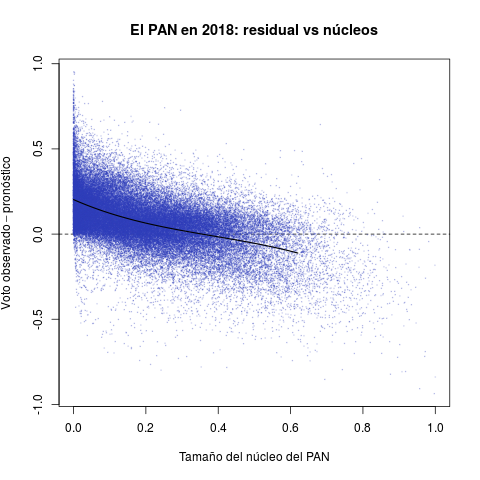
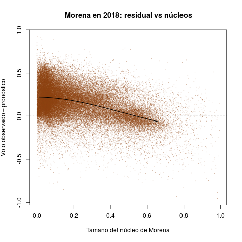
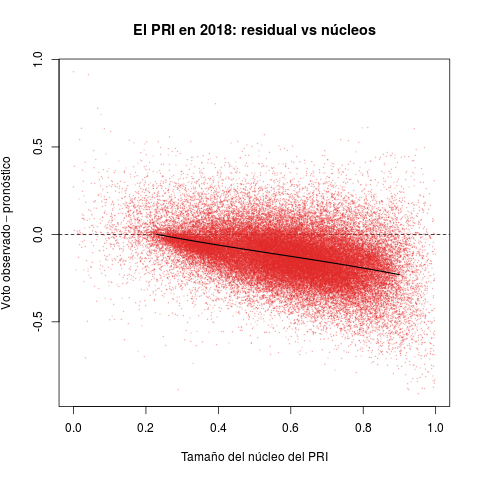

1 Los estadísticos en acción
La tabla 1 presenta dos pares de diagramas de las elecciones de diputados federales de 2015 (abajo) y 2018 (arriba). Cada punto representa un municipio, coloreado según el partido que ganó la elección, y cuyas coordenas en el diagrama ternario indican el voto relativo del PAN, PRI y de la izquierda en la elección de diputados federales (no considera los votos de otros partidos).1
 |
 |
 |
 |
Del lado izquierdo aparecen los pronósticos de voto para los municipios. La idea detrás del estadístico es resumir la evolución del voto en el municipio en cinco elecciones previas (2003-2015 en el caso de 2018) y usar la tendencia para proyectar un pronóstico de voto para 2018. Los diagramas del lado derecho, en cambio, muestran los resultados observados en ambas elecciones.
Destaco tres rasgos notables en 2018. El primero es la discrepancia entre los diagramas ternarios izquierdo y derecho. O el modelo no acierta en sus pronósticos, o la de 2018 fue una elección extraordinaria. La historia otorgaba licencia para pronosticar un triunfo holgado del PRI, tanto en número de municipios ganados como en los márgenes de victoria. Los municipios fuera de las bandas punteadas los gana un partido con un margen de 15 puntos o más, y el grueso de los municipios seguros son rojos en el pronóstico, con Morena en un distante segundo lugar. En los hechos, si bien un número no insignificante de municipios migraron hacia el PAN, la clara ventaja la demostró Morena. El underachiever fue el PRI. En contraste, los diagramas inferiores izquierdo y derecho presentan diferecias menores—2015 fue una elección normal, el pasado permitió pronosticar mejor.
Segundo, las aristas y los vértices del triángulo 2018 se despoblaron en los hechos. En los vértices se ubican municipios "zapato", sin competencia. Las aristas, en cambio, capturan bipartidismo más (dentro de las bandas punteadas) o menos (fuera) simétrico. Destaca en los pronósticos que sólo la arista PAN–Morena se esperaba desierta. En la práctica, el voto del tercer partido nunca se anuló, hubo más descoordinación que en el pasado. De hecho la intersección de las bandas punteadas aparece más densa y homogénea en el diagrama derecho que en el izquierdo.
Tercero, la competencia PAN vs izquierda fue moneda corriente en 2018. El patrón de los municipios competidos de las últimas dos décadas, visible en los diagramas de 2015, involucraba rivalidades PRI–PAN o PRI–izquierda, y rara vez PAN–izquierda. Fue esto lo que posibilitó las alianzas que formaron PAN y PRD en elecciones subnacionales desde 2010 y que culminaron en el Frente de 2018.
Los diagramas de la Tabla 2 reportan secciones electorales y por ello ofrecen retratos de grano mucho más fino que los anteriores. Permiten introducir la otra cantidad de interés para esta nota: el núcleo de apoyo de los partidos. La idea del estadístico es medir el tamaño del grupo que históricamente ha apoyado al partido consistentemente, en las buenas y en las malas.
|  |  |  |
El eje horizontal de cada diagrama mide el tamaño estimado del núcleo de apoyo de cada partido como proporción del electorado de la sección. El PRI aventajó a los demás en el periodo, gozó de núcleos en todas las secciones del país. Las distribuciones del PAN y de la izquierda, en cambio, aparecen desplazadas hacia el cero del eje—son replativamente pocas las secciones donde contaron con apoyo incondicional.
El eje vertical reporta el desempeño de los tres partidos en 2018 (la diferencia entre el voto observado y el pronóstico). Valores positivos indican que el partido superó las expectativas en la sección, negativos que quedó a deber. El desastre electoral del PRI se aprecia claro en el diagrama rojo. Aunque hubo secciones con desempeño positivo, la densidad se concentra masivamente debajo de la línea horizontal del cero, algo que la Tabla 1 ya dejaba entrever. Lo verdaderamente sorprendente es que el pésimo desempeño es directamente proporcional al tamaño del núcleo priista. Peña y Meade consiguieron lo que parecía, si no imposible, sí extremadamente improbable: enajenar a los votantes incondicionales del PRI en 2018. El PAN y la izquierda, en cambio, cumplieron con el pronóstico en secciones donde han contado con algunos grupos de apoyo. Ambos (sobretodo Morena) excedieron pronósticos donde carecen de núcleos importantes, arrabatándole al PRI sus votantes.
La nota elabora ahora sobre la receta con que cociné los estadísticos (el código para replicarlos se encuentra aquí).